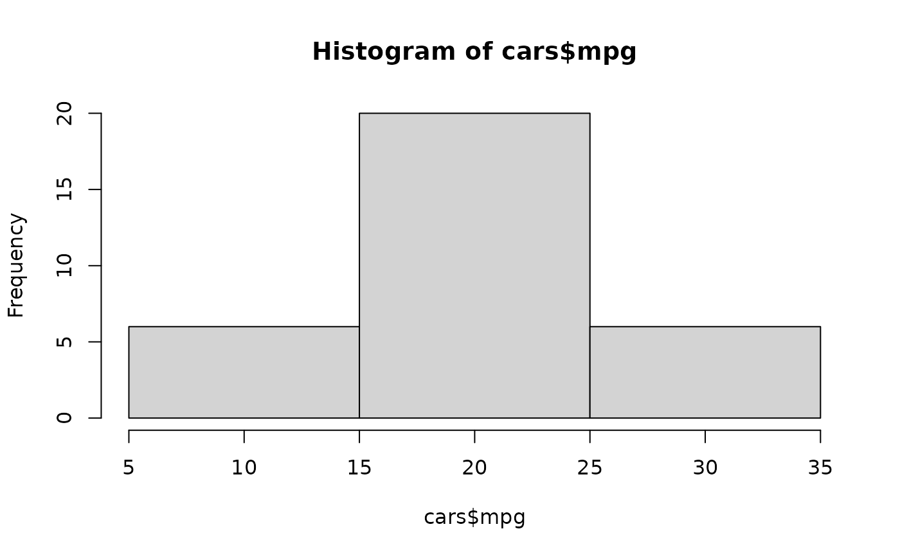
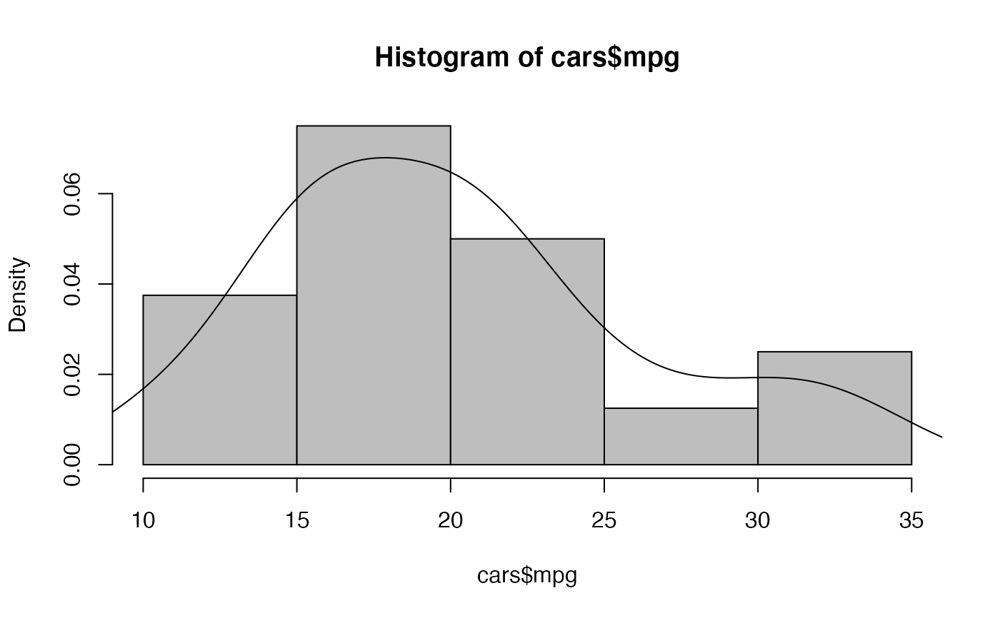
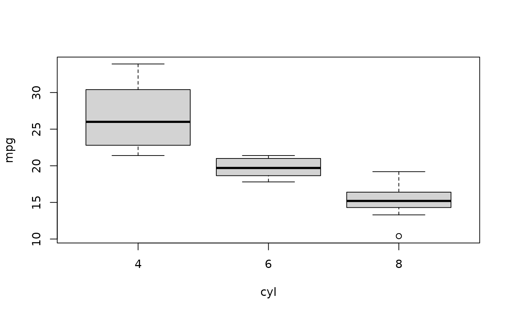

To print a listing of all examples of a chapter, use ch14().
To run all the examples of ch14(), use example(ch14).
ch14()
See also
Other Chapters:
ch01(),
ch02(),
ch03(),
ch04(),
ch05(),
ch06(),
ch07(),
ch08(),
ch09(),
ch10(),
ch11(),
ch12(),
ch13(),
ch15(),
ch16(),
ch17(),
ch18(),
ch19(),
ch20()
Examples
# Chapter 14 # Summarizing Data # Starting with the Right Data ## Using factors or numeric data ## Counting unique values sapply(mtcars, function(x) length(unique(x)))#> mpg cyl disp hp drat wt qsec vs am gear carb #> 25 3 27 22 22 29 30 2 2 3 6## Preparing the data cars <- mtcars[c(1,2,9,10)] cars$gear <- ordered(cars$gear) cars$am <- factor(cars$am, labels=c('auto', 'manual')) str(cars)#> 'data.frame': 32 obs. of 4 variables: #> $ mpg : num 21 21 22.8 21.4 18.7 18.1 14.3 24.4 22.8 19.2 ... #> $ cyl : num 6 6 4 6 8 6 8 4 4 6 ... #> $ am : Factor w/ 2 levels "auto","manual": 2 2 2 1 1 1 1 1 1 1 ... #> $ gear: Ord.factor w/ 3 levels "3"<"4"<"5": 2 2 2 1 1 1 1 2 2 2 ...#> [1] 20.09062#> [1] 6#> [1] 6.026948#> [1] 10.4 33.9#> 0% 25% 50% 75% 100% #> 10.400 15.425 19.200 22.800 33.900#> 5% 95% #> 11.995 31.300# Describing Categories ## Counting appearances ### Creating a table amtable <- table(cars$am) amtable#> #> auto manual #> 19 13#> #> auto manual #> 0.59375 0.40625prop.table(amtable)#> #> auto manual #> 0.59375 0.40625#> [1] "auto"## Using frequencies or densities ### Creating a density plot mpgdens <- density(cars$mpg) plot(mpgdens)lines(mpgdens)# Describing Multiple Variables ## Summarizing a complete dataset ### Getting the output summary(cars)#> mpg cyl am gear #> Min. :10.40 Min. :4.000 auto :19 3:15 #> 1st Qu.:15.43 1st Qu.:4.000 manual:13 4:12 #> Median :19.20 Median :6.000 5: 5 #> Mean :20.09 Mean :6.188 #> 3rd Qu.:22.80 3rd Qu.:8.000 #> Max. :33.90 Max. :8.000### Fixing a problem cars$cyl <- as.factor(cars$cyl) ## Plotting quantiles for subgroups boxplot(mpg ~ cyl, data=cars)#> [1] "Sepal.Length" "Sepal.Width" "Petal.Length" "Petal.Width" "Species"#> [1] 0.9628654#> num [1:4, 1:4] 1 -0.118 0.872 0.818 -0.118 ... #> - attr(*, "dimnames")=List of 2 #> ..$ : chr [1:4] "Sepal.Length" "Sepal.Width" "Petal.Length" "Petal.Width" #> ..$ : chr [1:4] "Sepal.Length" "Sepal.Width" "Petal.Length" "Petal.Width"iris.cor['Petal.Width', 'Petal.Length']#> [1] 0.9628654### Dealing with missing values # Working with Tables ## Creating a two-way table ### Creating a table from two variables with(cars, table(am, gear))#> gear #> am 3 4 5 #> auto 15 4 0 #> manual 0 8 5### Creating tables from a matrix trial <- matrix(c(34,11,9,32), ncol=2) colnames(trial) <- c('sick', 'healthy') rownames(trial) <- c('risk', 'no_risk') trial.table <- as.table(trial) trial.table#> sick healthy #> risk 34 9 #> no_risk 11 32### Extracting the numbers trial.table['risk', 'sick']#> [1] 34#> 'data.frame': 2 obs. of 2 variables: #> $ sick : num 34 11 #> $ healthy: num 9 32#> 'data.frame': 4 obs. of 3 variables: #> $ Var1: Factor w/ 2 levels "risk","no_risk": 1 2 1 2 #> $ Var2: Factor w/ 2 levels "sick","healthy": 1 1 2 2 #> $ Freq: num 34 11 9 32#> sick healthy Sum #> risk 34 9 43 #> no_risk 11 32 43 #> Sum 45 41 86#> sick healthy Sum #> risk 34 9 43 #> no_risk 11 32 43#> sick healthy #> risk 0.3953488 0.1046512 #> no_risk 0.1279070 0.3720930#> sick healthy #> risk 0.7906977 0.2093023 #> no_risk 0.2558140 0.7441860